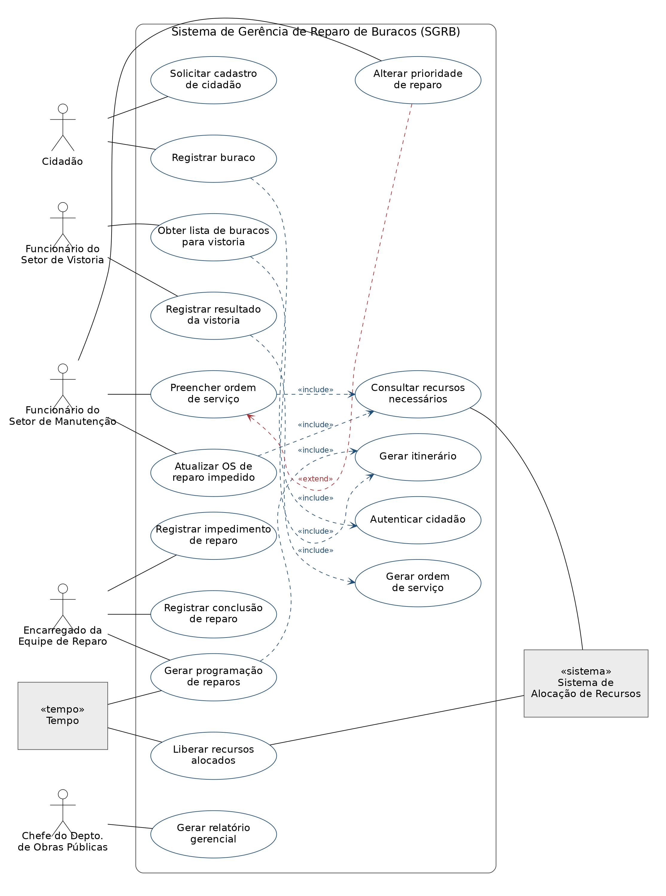

Modelos de Processos de Software
Antes de escrever a primeira linha de código, alguém precisa decidir em que ordem as atividades de desenvolvimento vão acontecer. Um processo de software é exatamente essa decisão — e ela muda o resultado do projeto tanto quanto o código em si.
Atividades de desenvolvimento de software
Todo sistema de software nasce de seis atividades típicas. Elas não são um framework específico — são o esqueleto comum sobre o qual quase todo processo de software é construído, do modelo mais rígido ao mais flexível.
O que acontece em cada etapa
Clique em cada atividade para ver objetivo, produto e detalhes — a mesma informação que orienta o cronograma de qualquer projeto de software.
O que é um processo de software
As seis atividades podem ser concatenadas de formas diferentes. Um processo de software é justamente essa organização — a sequência escolhida para as atividades de desenvolvimento.
Processo de software
Organiza as atividades de desenvolvimento em uma sequência adequada ao projeto — não existe uma única forma "correta", existe a forma mais adequada a cada contexto.
Avaliar o andamento
Ao definir a sequência das atividades, o processo permite acompanhar o progresso do desenvolvimento e gerar o cronograma do projeto.
Cascata e Iterativo-Incremental
Modelos convencionais são os utilizados antes dos modelos ágeis. Os dois mais representativos são o modelo de cascata (o mais antigo, de 1970) e o modelo iterativo e incremental, que nasceu da constatação de que a cascata era pouco realista na prática.
Modelo de Cascata
- Uma atividade só é iniciada após o término da anterior.
- Cada fase deve ser concluída antes do início da próxima.
- Execução segue como uma cascata — pode-se voltar a atividades anteriores só em caso de necessidade.
- Interação com o cliente ocorre, tipicamente, no início e no fim do desenvolvimento.
Modelo Iterativo e Incremental
- Iterativo: o sistema é desenvolvido através de vários passos similares.
- Incremental: em cada passo, o sistema é estendido com mais funcionalidades.
- Divide o desenvolvimento em ciclos; cada ciclo cobre um subconjunto de requisitos.
- Cada ciclo repete as atividades típicas de desenvolvimento de software.
O modelo assume que é possível definir todos os requisitos no início do desenvolvimento — mas nem sempre isso acontece, e não é viável parar o projeto esperando informação. Na prática, resolve-se seguindo com os requisitos existentes e encaixando os que faltaram conforme forem sendo definidos.
Também na prática não se implementa tudo de uma vez para testar no final: usa-se o ciclo de implementação/teste por parte. Ou seja, mesmo quem "usa cascata" costuma adequar o modelo à realidade de cada desenvolvimento.
Participação e risco
Incentiva a participação do usuário ao longo do projeto e permite gerenciar melhor os riscos de desenvolvimento — a possibilidade de eventos que causem prejuízo ao projeto (custo, cronograma, qualidade, satisfação do cliente).
Gestão mais difícil
Coordenar múltiplos ciclos, decidir o que entra em cada iteração e manter a coerência entre incrementos torna o gerenciamento do desenvolvimento mais complexo do que numa sequência única.
Rode um ciclo de desenvolvimento
Escolha um modelo e avance etapa por etapa. A diferença que mais importa não é visual — é o que acontece quando um requisito novo chega no meio do caminho.
Modelo de Cascata
Cada etapa só começa quando a anterior termina. Não há como voltar sem reiniciar o projeto.
O Manifesto Ágil
Modelos ágeis são utilizados a partir da elaboração do Manifesto Ágil, em 2001 — uma resposta direta à insatisfação com a forma como o desenvolvimento de software vinha sendo conduzido.
Insatisfação crescente na condução do desenvolvimento de software com os modelos convencionais, vistos como rígidos e burocráticos.
17 especialistas de projeção internacional se reúnem e lançam o Manifesto Ágil — um documento que passa a guiar os métodos ágeis.
A Agile Alliance, organização sem fins lucrativos com membros globais, mantém e promove os princípios e práticas de desenvolvimento ágil.
| Valor mais importante | Apesar de importante |
|---|---|
| Indivíduos e interação | Processos e ferramentas |
| Software em funcionamento | Documentação compreensível |
| Colaboração do cliente | Negociação de contrato |
| Resposta à mudança | Cumprimento de plano |
"We are uncovering better ways of developing software by doing it and helping others do it. […] That is, while there is value in the items on the right, we value the items on the left more." — Agile Alliance, Manifesto for Agile Software Development, 2001.
Os 12 princípios da Agile Alliance
O Manifesto se desdobra em 12 princípios mais concretos — o que muda no dia a dia de um time que decide segui-los.
Prioridade mais alta: satisfazer o cliente com entregas antecipadas e contínuas de software com valor.
Aceitar mudanças de requisitos mesmo em fases adiantadas — mudança é vantagem competitiva, não transtorno.
Entregar frequentemente software em funcionamento, de semanas a dois meses, de preferência em intervalos menores.
Pessoas de negócio e desenvolvedores trabalham em colaboração diária ao longo do projeto.
Projetos são conduzidos com indivíduos motivados, com o ambiente e o suporte de que precisam, e a confiança de que vão concluir o trabalho.
A conversa face a face é o método mais eficiente de troca de informação entre cliente e equipe, e entre a própria equipe.
Software em funcionamento é a principal medida de progresso.
Processos ágeis promovem desenvolvimento sustentável — patrocinadores, desenvolvedores e usuários mantêm um ritmo constante indefinidamente.
Atenção contínua à excelência técnica e ao bom projeto melhora a agilidade.
Simplicidade — a arte de maximizar a quantidade de trabalho não feito — é essencial.
As melhores arquiteturas, requisitos e projetos emergem de equipes auto-organizadas.
Em intervalos regulares, a equipe reflete sobre como ser mais eficaz e ajusta seu comportamento a isso.
Mito 1: "não é necessário gerar documentos durante o desenvolvimento". Na prática, o manifesto valoriza mais o software funcionando do que documentação exaustiva — o que não é o mesmo que documentação zero.
Mito 2: "não é necessário definir requisitos no processo ágil". Requisitos continuam existindo; o que muda é a forma como são levantados e revisados ao longo dos ciclos.
Mito 3: "o software deve ser produzido rapidamente, sem perder tempo com documentos". Velocidade não substitui excelência técnica — o princípio 9 é explícito sobre isso.
Quiz de fechamento
As quatro perguntas de resumo da aula — tente responder antes de revelar.
Quais são as principais atividades do desenvolvimento de software?
Levantamento de requisitos, análise de requisitos, projeto, implementação, testes e implantação — nessa ordem lógica, ainda que não necessariamente sequencial.
O que são modelos de processo de software?
São as diferentes formas de concatenar as atividades de desenvolvimento em uma sequência adequada ao projeto, permitindo avaliar o andamento do trabalho e gerar o cronograma.
Como as atividades de desenvolvimento podem ser organizadas?
No modelo de cascata, cada fase termina antes da próxima começar. No modelo iterativo e incremental, as atividades se repetem em ciclos, cada um entregando um incremento de funcionalidade.
Quais são as mensagens dos métodos ágeis?
Valorizar indivíduos e interação, software em funcionamento, colaboração com o cliente e resposta à mudança — sem descartar processos, documentação, contratos e planos, apenas priorizando o primeiro grupo quando os dois entram em conflito.
Levantamento e Análise de Requisitos
As duas primeiras atividades do processo de software são as que mais determinam se o sistema certo será construído. Uma descobre o que o sistema precisa fazer; a outra organiza essa descoberta em modelos que a equipe técnica consegue usar.
Quem está envolvido e do que se está falando
Descrever uma atividade do processo significa duas coisas: identificar quem participa dela e definir o que ela faz com os dados de entrada para gerar os dados de saída. Antes de entrar no levantamento e na análise, é preciso fixar o vocabulário.
Domínio
Área de conhecimento ou de atividade específica, com conceitos e terminologia próprios — aviação comercial, área financeira, instituição de ensino. Entender o domínio é pré-requisito para entender os requisitos.
Especialista de domínio
Pessoa que conhece profundamente o domínio, mas que em geral não é especialista em desenvolvimento de sistemas. É a fonte do conhecimento de negócio, não da solução técnica.
Stakeholders
Todas as pessoas afetadas pelo sistema — passageiro, operador de metrô, gerente de operação, diretor de operação. Nem todo stakeholder é usuário direto, e nem por isso deixa de ter requisitos.
Analista
Profissional que realiza o levantamento e a análise de requisitos. Sua competência central não é técnica: é saber conversar e extrair dados de especialistas de domínio e stakeholders.
"Sei que você acha que entendeu o que você pensa que eu disse, mas será que o que você ouviu foi o que eu quis dizer?" — Pressman
Para haver bom entendimento, os dois lados têm papéis distintos e igualmente difíceis: o especialista precisa explicar bem, o analista precisa ouvir e entender bem. Boa parte das falhas de requisitos nasce exatamente aqui — não na tecnologia.
Três categorias que não se confundem
Requisitos são as características que definem um sistema. Eles se dividem em três grupos, e separar os três corretamente é o que evita que uma restrição de contrato seja tratada como funcionalidade — ou que um requisito de desempenho apareça só no dia do teste.
Requisitos funcionais
O que o sistema faz. As funções que o sistema oferece aos seus usuários — cadastrar, reservar, calcular, emitir.
Requisitos não funcionais
Como o sistema precisa ser. Desempenho, portabilidade, segurança, facilidade de uso, capacidade de funcionar sem falhas, capacidade de ser alterado.
Restrições ao desenvolvimento
Limites impostos de fora ao projeto: custos e prazos, plataforma de execução, aspectos legais e regras de negócio. Não descrevem o comportamento do sistema — descrevem o cerco dentro do qual ele precisa ser construído.
Classificador de requisitos
Dez enunciados. Para cada um, decida em qual das três categorias ele se encaixa.
Levantamento de requisitos
O objetivo principal não é produzir uma lista — é uniformizar a visão dos usuários e da equipe técnica em relação ao problema a ser resolvido. Equipe técnica e cliente definem juntos as necessidades dos futuros usuários do sistema.
Técnicas de levantamento
Nenhuma técnica sozinha dá conta. Elas se combinam conforme o domínio, o acesso aos stakeholders e o que já existe pronto.
Leitura de obras de referência — entrar no vocabulário do domínio antes de ocupar o tempo do especialista.
Observação do ambiente do usuário — o que as pessoas fazem nem sempre é o que dizem que fazem.
Entrevista com usuários e especialistas de domínio — a técnica central, e a mais dependente de habilidade de escuta.
Reuso de análises anteriores — domínios parecidos já foram modelados por alguém.
Avaliação de sistemas existentes do mesmo domínio — inclusive dos concorrentes e do sistema legado a ser substituído.
O documento de requisitos
Ele tem uma exigência incomum: precisa ser entendido por leitores não técnicos (o cliente, que vai aprová-lo) e por leitores técnicos (a equipe, que vai construir a partir dele). Escrever para os dois públicos ao mesmo tempo é a maior dificuldade do documento.
O que precisa estar lá
Problema a ser resolvido pelo software · necessidades dos usuários · escopo do software · descrição dos requisitos no nível adequado de detalhe.
Escopo
Define o que faz e o que não faz parte do sistema. Qualquer alteração de escopo muda os recursos necessários ao projeto — por isso ele é descrito através dos requisitos de negócio.
Conjunto consistente e completo — requisitos não podem se contradizer nem deixar lacunas.
Ordenação por prioridade — é preciso ter critérios explícitos de ordenação, e não uma lista plana.
Identificação de requisitos voláteis — os que ainda não estão consolidados precisam estar marcados como tal, porque vão mudar.
Do requisito de negócio ao requisito detalhado
No Sistema de Gerência de Hotel, os requisitos de negócio definem o contorno do sistema. Cada um deles se abre em requisitos detalhados. Clique para ver o desdobramento.
Análise de requisitos
A análise define uma solução do problema — sem se preocupar com como essa solução será implementada. A regra é explícita: não amarrar a solução à implementação. Linguagem de programação, sistema operacional e banco de dados ficam fora dessa conversa.
Estudo detalhado
Retomar os requisitos levantados e estudá-los em profundidade, organizando-os de forma coerente.
Construção de modelos
Representar o sistema a ser construído através de modelos — a descrição do que o sistema deve ser.
Verificação e validação: não são a mesma coisa
Verificação
Analisar se os modelos construídos estão de acordo com os requisitos levantados.
Validação
Assegurar que as necessidades do cliente estão sendo atendidas pelo sistema.
As duas sub-atividades da análise
Análise de domínio
Também chamada de análise de negócio.
- Identificar e modelar os objetos do mundo real a serem processados pelo sistema.
- Identificar os processos e as regras de negócio da organização.
- Domínio "instituição de ensino" → objetos: aluno, professor, curso, disciplina, turma.
- Regras: aprovação com nota ≥ 5 e frequência ≥ 70%; máximo de alunos por turma depende da disciplina.
Análise de aplicação
Parte de onde a análise de domínio parou.
- Detalhar os objetos de domínio com foco na definição do sistema que resolve o problema.
- Complementar com objetos de computação que dão sentido a um sistema.
- Exemplo: telas e relatórios do Sistema Júpiter.
Por que modelar
Modelo é a representação abstrata de um elemento que se quer compreender ou descrever, mostrando as características relevantes sob um determinado foco. Maquete de prédio, aeromodelo, leiaute do interior de uma casa — e modelo de software.
Comunicação entre as pessoas envolvidas — o modelo vira ponto de referência comum a todos os participantes.
Gerenciamento de complexidade — vários modelos para o mesmo sistema, cada um com uma finalidade.
Previsão de comportamento — simular partes do sistema antes de existir código.
Redução de custos — é muito mais barato corrigir um erro no modelo do que no sistema pronto.
A modelagem é o que permite discutir um sistema inteiro antes de escrever a primeira linha de código — a ideia central defendida por Grady Booch e incorporada à UML.
Os modelos básicos da UML
A modelagem usa tecnologia orientada a objetos e a UML — Unified Modeling Language. Os modelos abaixo são os básicos; os de atividades e de deployment entram depois. Sem se preocupar com os detalhes agora.
Modelo de Casos de Uso
Descreve as funções do sistema a partir da necessidade dos usuários.
Modelo de Classes
Descreve a estrutura do sistema através das classes.
Modelo de Interação
Descreve o funcionamento do sistema através da interação entre objetos das classes.
Modelo de Estados
Descreve o comportamento de um sistema ou de parte dele ao longo do tempo.
Boia meteorológica
Os navios precisam de dados meteorológicos para navegação — temperatura do ar, temperatura da água, velocidade do vento e localização do ponto. As boias, distribuídas no mar, coletam os dados da sua área de abrangência, processam e transmitem aos navios. Cada boia também emite pedido de socorro quando uma chave nela instalada é acionada por um náufrago.
Coletar dados de velocidade do vento, temperaturas do ar e da água, e localização · enviar para os navios a cada 60 segundos · enviar os dados das últimas 24 h quando solicitado · enviar mensagem de pedido de socorro quando acionada pelo náufrago · ativar ou desativar a mensagem de socorro · acender ou apagar a luz vermelha da boia.
Esses dados foram definidos em conjunto por engenheiros de sistema, especialistas em meteorologia e analistas de requisitos — três perfis que nenhum deles substitui sozinho.
O mesmo sistema, quatro modelos
Cada modelo responde a uma pergunta diferente sobre a mesma boia. Clique para ver o que cada um mostra.
Quiz de fechamento
As seis perguntas de resumo da aula — tente responder antes de revelar.
O que são requisitos?
Não são só funcionalidades: qualquer característica que delimite o que o sistema é e como precisa se comportar conta como requisito.
Quais são os tipos de requisitos?
Funcionais dizem o que o sistema faz. Não funcionais tratam de desempenho, portabilidade, segurança, usabilidade, confiabilidade e facilidade de alteração. Restrições ao desenvolvimento vêm de custos, prazos, plataforma, aspectos legais e regras de negócio.
Como os requisitos são identificados?
Leitura de obras de referência, observação do ambiente do usuário, entrevistas com usuários e especialistas de domínio, reuso de análises anteriores e avaliação de sistemas existentes do mesmo domínio.
Como os requisitos são representados?
O levantamento registra o consenso no documento de requisitos, legível por técnicos e não técnicos. A análise transforma esses requisitos em modelos UML — casos de uso, classes, interação e estados.
O que são modelos?
Um modelo representa as características relevantes de um elemento sob um determinado foco — como uma maquete de prédio ou o leiaute do interior de uma casa. Nenhum modelo representa tudo, e isso é intencional.
Para que servem os modelos?
Servem de ponto de referência comum entre os envolvidos, permitem tratar a complexidade em partes (vários modelos, cada um com sua finalidade), possibilitam prever o comportamento por simulação e reduzem custos — errar no modelo é mais barato que errar no código.
Modelo de Casos de Uso
O primeiro modelo da UML a ser construído descreve o sistema visto de fora: quais funções ele oferece e quais agentes externos interagem com ele. É o modelo que o cliente consegue ler — e, por isso, o que se valida com ele.
O que esse modelo representa
O Modelo de Casos de Uso é uma representação das funções do sistema observáveis externamente e dos agentes externos que interagem com ele. Tudo o que acontece por dentro fica de fora deste modelo — deliberadamente.
Funções
O que o sistema faz do ponto de vista de quem o usa. Não é o algoritmo, não é a tela: é a função completa que atende a uma necessidade — fazer saque, reservar quarto, cadastrar usuário.
Agentes externos
Quem interage com o sistema a partir de fora: pessoas, outros sistemas, dispositivos. São eles que definem onde o sistema termina e o mundo começa.
Onde ele entra entre os modelos da UML
Os três modelos principais se encadeiam: a descrição dos casos de uso alimenta a identificação de classes e relacionamentos, que por sua vez sustenta a modelagem da interação entre objetos.
Modelo de Casos de Uso
Descreve as funções do sistema.
Modelo de Classes
Descreve a estrutura do sistema.
Modelo Dinâmico
Descreve o comportamento do sistema.
Encadeamento
Casos de uso mal descritos comprometem a identificação das classes — e o erro se propaga para todos os modelos seguintes.
O modelo tem duas partes — e as duas são obrigatórias
Só o desenho não basta e só o texto não basta. O diagrama dá a visão de conjunto; a descrição detalhada dá a precisão que o diagrama não consegue expressar.
Diagramas de casos de uso
Representam o sistema graficamente através de atores, casos de uso e relacionamentos entre eles.
- Definem o contexto do sistema através dos elementos externos (atores).
- Descrevem a funcionalidade através dos casos de uso — funcionalidade é um conjunto de funções.
- Trabalham num nível alto de abstração.
Descrição detalhada
Para cada caso de uso, um texto padronizado.
- Relaciona os atores envolvidos.
- Lista os passos do caso de uso.
- Define condições para iniciar e para terminar.
- Registra inclusões e extensões.
Cada caso de uso deve ser descrito segundo um padrão adotado, para entendimento mais preciso. O padrão uniformiza o entendimento do modelo entre todos os participantes do desenvolvimento — analistas, projetistas, programadores e testadores leem a mesma coisa da mesma forma.
Os elementos do diagrama
A notação é pequena de propósito: sete símbolos dão conta de todo o diagrama. Quanto menos notação, mais gente consegue ler o modelo.
Ator
Agente externo
É um agente externo que interage com o sistema. Os atores definem o contorno do sistema: o que é ator está fora, o que é caso de uso está dentro.
Caixa eletrônico
O sistema recebe o acionamento do cliente e consulta o sistema do banco. Atores: Cliente e Sistema do Banco — um humano e um sistema, ambos externos.
Caso de uso
Caso de uso é uma função do sistema relevante para um ator, descrita em linguagem natural. Descreve uma sequência completa de interações entre o sistema e um ou mais atores, para atender à necessidade do ator que acionou o sistema.
Ator primário
Inicia o caso de uso. É dele a necessidade que o caso de uso atende.
Ator secundário
Participa do caso de uso, mas é acionado por ele — não o inicia.
Os casos de uso formam a base para a definição das classes e das interações entre elas. Descrição mal feita de casos de uso causa erro na identificação de classes — e esse erro só aparece muito depois, já no projeto ou na implementação.
Anatomia de uma descrição de caso de uso
Exemplo real: o caso de uso 2.1 — cadastrar usuário, de um sistema de biblioteca. Clique em cada campo para ver o conteúdo e o papel que ele cumpre.
As quatro conexões possíveis
Um relacionamento representa conexão entre ator e caso de uso, entre casos de uso, ou entre atores. São quatro tipos, e confundi-los é o erro mais comum em prova e em projeto. Clique para ver o diagrama de cada um.
Do texto corrido aos casos de uso
Este é o enunciado do caixa eletrônico como o cliente o contaria. Dentro dele há dois casos de uso, não um. Alterne entre eles para ver qual trecho do texto cada um cobre e como vira sequência de eventos.
Fazer saque
A sequência de "fazer saque" começa quando o cliente seleciona a operação. Tudo o que vem antes — inserir cartão, digitar senha, validar — é outra função completa, com evento iniciador e pós-condição próprios. Logo, é outro caso de uso.
Reconhecer isso é o teste prático: se um trecho tem começo, fim e valor próprio para o ator, ele é um caso de uso separado.
A função de uso do caixa eletrônico não se restringe ao saque: depósito, saldo, transferência e outros. Cada cenário deve ser descrito como um caso de uso, de forma semelhante ao "fazer saque".
Identificador de relacionamentos
Oito situações. Para cada uma, decida qual relacionamento do diagrama de casos de uso a representa.
Quiz de fechamento
As cinco perguntas de resumo da aula — tente responder antes de revelar.
Para que serve o modelo de casos de uso?
É a descrição do sistema em alto nível de abstração, feita do lado de fora. Serve para acordar com o cliente o que o sistema faz, e serve de base para todos os modelos seguintes.
O que é caso de uso? O que é ator?
O caso de uso descreve, em linguagem natural, uma sequência completa de interações entre o sistema e um ou mais atores, para atender à necessidade de quem o acionou. O ator é o agente externo — pessoa ou sistema — e é ele quem define o contorno do sistema.
Para que relacionar atores e casos de uso?
A comunicação indica que aquele ator interage com aquele caso de uso. Um ator pode se relacionar com vários casos de uso e um caso de uso pode envolver vários atores (um primário, que inicia, e secundários, acionados por ele). O conjunto dessas ligações define o contexto do sistema.
Quais são as partes do modelo de casos de uso?
Os diagramas trazem atores, casos de uso e relacionamentos. A descrição detalhada traz, por caso de uso, os atores, os passos, as condições de início e término, as inclusões e as extensões.
Para que serve cada parte do modelo?
O diagrama define o contexto (pelos atores) e a funcionalidade (pelos casos de uso) em alto nível de abstração. A descrição detalhada, seguindo um padrão adotado, uniformiza o entendimento entre todos os participantes do desenvolvimento e é a fonte usada para identificar classes.
Construção do Modelo de Casos de Uso
O módulo anterior definiu o que é o modelo. Este é o roteiro de como construí-lo: sete passos, quatro bancos de perguntas para não deixar nada de fora e um padrão de descrição para preencher campo por campo.
A construção tem ordem — e a ordem importa
O modelo é constituído por diagramas de casos de uso e pela descrição detalhada de cada caso de uso. Os diagramas dão a visão de alto nível; a descrição textual padronizada detalha a informação contida neles. A construção segue sete passos — e repare que a revisão de atores e casos de uso vem antes de desenhar o diagrama.
Tudo começa por analisar e compreender uma descrição do sistema a ser modelado — e supõe-se que essa descrição seja a mais consistente possível. Se o enunciado ainda tem contradições, elas se propagam para atores, casos de uso e para todos os modelos seguintes.
Estratégia para identificar os atores
Os atores são identificados com base nos requisitos da descrição do sistema. A técnica é interrogar o enunciado: cada pergunta abaixo tende a revelar um grupo de usuários que você não tinha considerado. Clique para marcar as que já respondeu.
Depois das perguntas, três acabamentos
Avaliar a consistência dos grupos de usuários levantados e, a partir deles, identificar os atores.
Organizar os atores em função da similaridade do seu perfil, caso seja necessário — dois cargos com o mesmo papel diante do sistema podem ser um único ator.
Descrever resumidamente o papel de cada ator. Essa descrição é reaproveitada depois, no campo Atores da descrição detalhada.
"Quem está interessado em algum requisito funcional do sistema, mesmo que não use diretamente o sistema?" — e também "quem fornece suporte e manutenção?". São atores legítimos que raramente aparecem no enunciado de forma explícita.
Estratégia para identificar os casos de uso
Os casos de uso são identificados a partir dos atores e dos requisitos. São duas rodadas de perguntas: a primeira parte da necessidade do ator; a segunda olha o contexto das operações e costuma revelar os casos de uso que ninguém pediu, mas o sistema precisa ter.
Para cada caso de uso identificado
Identificar o que dispara a interação
Para cada caso de uso, identificar o evento que inicia cada interação do ator com o sistema. É esse evento que vai preencher o campo Evento Iniciador da descrição detalhada.
Adequar os nomes
Os nomes devem caracterizar as funções realizadas pelo sistema — na forma verbo + objeto, como pagar compras, ou substantivo de ação, como pagamento das compras.
Duas classificações que mudam o plano de trabalho
Primários
Representam os objetivos dos atores no negócio.
- Trazem benefício direto ao ator.
- São a razão de existir do sistema.
Secundários
Não trazem benefícios diretos ao ator em relação ao negócio, mas são necessários para o funcionamento adequado do sistema.
- Sustentam a operação: cadastros, manutenção de dados.
- Sem eles os primários não funcionam.
Classificar também os casos de uso mais críticos — os mais complexos, os mais desconhecidos, os mais importantes para o negócio. Essa classificação impacta a estratégia de detalhamento: detalhar os mais complexos no começo evita surpresas; detalhar antes os mais importantes para o cliente melhora o diálogo com ele.
Descrição sucinta
Descrever sucintamente cada caso de uso — cerca de 3 linhas — para se ter uma visão de conjunto do sistema. Esse texto é depois reaproveitado no campo Descrição da ficha detalhada.
Pacotes
Agrupar os casos de uso relacionados em pacotes, para não poluir o modelo. O pacote cadastrar produto contém cadastrar, excluir, alterar e buscar produto.
Estratégia para construir o diagrama
Com atores e casos de uso já identificados e revistos, o diagrama é quase transcrição. As convenções abaixo são sugestões de legibilidade, não regras da notação — e o critério de decisão é sempre o mesmo: o diagrama precisa ser de fácil entendimento.
Posicionamento
De uma forma geral, os atores ficam na parte periférica da área do diagrama e os casos de uso na parte central.
Pacotes em vez de tudo
Para manter o diagrama legível, pode-se representar o pacote no lugar de todos os casos de uso que ele contém.
Escala típica
Um sistema de pequeno a médio porte possui, tipicamente, 10 a 20 casos de uso — e cabe em uma folha A4 ou em uma tela de ferramenta de modelagem.
Sistemas maiores
Para sistemas de maior porte, recomenda-se mais de um diagrama, cada um apresentando grupos de casos de uso logicamente relacionados.
Estratégia para descrever um caso de uso
Antes de detalhar qualquer coisa, três decisões: definir os critérios de priorização, priorizar os casos de uso segundo esses critérios e selecionar um padrão de descrição. Só então descrever — na ordem de prioridade e no padrão escolhido.
As dez partes do padrão
Cada campo tem uma função, um exemplo e um passo de preenchimento próprio. Clique para ver o que entra em cada um — e o que não entra.
Quando o caso de uso é um pacote
Um caso de uso pode ser composto por mais de um caso de uso — é o caso de cadastrar cliente, que reúne cadastrar, alterar, remover e consultar cliente. Nesse caso, o conjunto é descrito como um pacote, com cada caso de uso constituinte descrito segundo o mesmo padrão.
pacote — descrito como sequência dos constituintes
Estratégia para rever atores e casos de uso
Depois de elaborado, o modelo é revisto em relação à sua consistência e completeza. As listas abaixo não são exaustivas — são as perguntas que conduzem a revisão. Use-as como checklist antes de entregar o modelo.
Ator sem caso de uso: se um ator não está envolvido em pelo menos um caso de uso, ou ele não é ator, ou falta um caso de uso.
Passos com objetivos diferentes: se os passos da descrição não fazem parte de um mesmo objetivo, é preciso separar em outros casos de uso.
SVIE — Sistema de Venda de Ingressos para Espetáculos
O documento aplica toda a estratégia a um caso único. Leia o enunciado como o cliente o entregaria e acompanhe o que sai dele: três atores, quatro casos de uso, um diagrama e as fichas detalhadas.
Os atores
Cliente do Banco BXX que vai comprar os ingressos. Ator primário de vender ingresso.
Sistema On-line de Autorização de Débito, que verifica o estado financeiro do cliente. Ator secundário — é acionado pelo caso de uso, não o inicia.
Faz a manutenção dos dados de espetáculos, sessões e teatros no sistema, para a operação adequada do SVIE.
O diagrama de casos de uso
As fichas detalhadas
O diagrama dá a visão geral, mas não descreve o funcionamento. Alterne entre as fichas — a primeira é o caso de uso primário; as quatro seguintes são os constituintes do pacote cadastrar espetáculo. A descrição de cadastrar sessão e cadastrar teatro é semelhante.
Os passos 9 e 11 são os pontos em que podem ocorrer atividades alternativas. No passo 9 o cliente pode alterar a seleção de lugares ou cancelar a reserva, em vez de confirmar. No passo 11 o sistema pode receber a autorização, a recusa, ou a informação de que a resposta do SOAD não chegou no intervalo de tempo esperado.
Já enviar dados da transação e receber dados da transação podem ser usados por outros casos de uso — por isso são descritos separadamente e aparecem como inclusões.
Repare no nível de abstração: o engenheiro precisa conhecer o processo de venda de ingresso e definir os passos da interação, mas não detalha ainda algoritmos nem estruturas de dados.
Primário, secundário ou pacote?
Oito casos de uso de sistemas diferentes. Para cada um, decida como você o classificaria na etapa de identificação.
Estrutura do Documento de Casos de Uso
O modelo pronto é organizado em um documento com sete seções mais referências. A ordem não é decorativa: ela leva o leitor do contexto ao detalhe e termina na rastreabilidade.
Introdução
- Apresentar o objetivo do documento.
- Referenciar e ser compatível com o documento de Especificação de Requisitos.
Descrição do Sistema
- Apresentar a descrição sucinta do sistema.
- Ser compatível com a descrição fornecida como enunciado do desenvolvimento.
Diagramas de Casos de Uso
- Apresentar os diagramas de casos de uso.
Descrição de Atores
- Descrever sucintamente os atores.
Descrição Sucinta de Casos de Uso
- Apresentar cada caso de uso em 2 ou 3 linhas, para ajudar a entender a visão geral do diagrama.
- Essa descrição pode ser reaproveitada na descrição detalhada.
Descrição de Casos de Uso
- Descrever os casos de uso conforme o padrão de dez campos.
Relação entre funções do sistema e casos de uso
- As funções devem ser as descritas na Especificação de Requisitos e realizadas pelos casos de uso identificados.
- Finalidade: apresentar a rastreabilidade dos casos de uso para as funções de software.
- Pode-se usar uma tabela.
Referências
- Listar os documentos e textos utilizados na elaboração.
- Citar, pelo menos, o documento que contenha a descrição do sistema.
Quiz de fechamento
Seis perguntas sobre o processo de construção — tente responder antes de revelar.
Quais são os sete passos da construção do modelo de casos de uso?
Note as duas revisões: uma logo depois da identificação, antes de desenhar, e outra no fim, sobre o modelo completo. Revisar antes do diagrama é mais barato do que redesenhar depois.
Qual é a diferença entre caso de uso primário e secundário?
Montar lista de compras é primário — é o que o ator quer. Cadastrar produto da loja é secundário — ninguém compra um sistema para cadastrar produtos, mas sem isso a lista de compras não existe.
Para que serve classificar os casos de uso por criticidade?
Os mais críticos são os mais complexos, os mais desconhecidos e os mais importantes para o negócio. Detalhar os mais complexos primeiro evita surpresas; detalhar antes os mais importantes para o cliente melhora o diálogo com ele.
O que vai na sequência de eventos e o que vai nas extensões?
Cada passo do fluxo principal precisa explicitar se o sujeito é o ator ou o sistema. As extensões cobrem operações alternativas (outro tipo de pagamento) e exceções (pagamento não autorizado), sempre anotando o passo em que ocorrem e a condição que leva até elas.
Quantos casos de uso tem um sistema de pequeno a médio porte, e o que fazer quando há mais?
Para sistemas de maior porte, usar mais de um diagrama, cada um com grupos de casos de uso logicamente relacionados. Também se pode representar pacotes no lugar de todos os casos de uso, para não poluir o diagrama.
Para que serve a seção de relação entre funções do sistema e casos de uso?
As funções devem ser as descritas na Especificação de Requisitos, e cada uma precisa ser realizada por algum caso de uso identificado. Uma tabela costuma resolver — e é o que prova que nada do requisito ficou de fora do modelo.
Exercício: Sistema de Gerência de Reparo de Buracos
O módulo anterior deu o roteiro. Aqui ele é aplicado do começo ao fim em um enunciado real: da descrição do sistema até as fichas de caso de uso, passando pelas três tabelas do relatório e pelos comentários dos professores na aula de 24/08.
A descrição do sistema, parágrafo por parágrafo
Modelar bem depende de ler bem. Cada parágrafo do enunciado carrega, em geral, uma dessas três coisas: quem age (um ator), o que o sistema faz (uma função) ou o que o sistema guarda (um dado). Abaixo, o enunciado do SGRB com a leitura ao lado.
A Prefeitura decidiu informatizar a gerência de reparo de buracos das suas vias, realizada no Departamento de Obras Públicas. O serviço de reparo já existente continua funcionando em paralelo até ser substituído.
- Define o contorno do sistema: o SGRB é da Prefeitura, não do cidadão.
- "Continua existindo em paralelo" não vira caso de uso — é restrição de implantação.
Os cidadãos registram os buracos encontrados nas vias por um aplicativo. Para solicitar o cadastro, o cidadão fornece nome, CPF, RG, endereço e número do celular.
- Ator: Cidadão.
- Função: cadastrar cidadão. Dado relevante: Cidadão, com os cinco campos citados.
Para solicitar o reparo, o cidadão cadastrado precisa se autenticar e fornecer: endereço do buraco, dimensão aproximada, localização na via (meio da via, meio-fio), nível de obstrução de trânsito (alto, médio, baixo) e uma foto opcional.
- Função: registrar buraco. Dado relevante: Buraco.
- "Precisa se autenticar" é o que justifica a inclusão de autenticar cidadão.
Para filtrar os trotes, a existência dos buracos é verificada pelo Setor de Vistoria. Todas as manhãs os funcionários solicitam a lista de buracos da sua região, organizada em itinerário adequado, percorrem a região, confirmam as características e atribuem a prioridade inicial (alta, média, baixa). Os resultados são registrados por equipamentos móveis.
- Ator: Setor de Vistoria.
- Duas funções distintas: obter a lista (com itinerário) e registrar o resultado da vistoria.
- "Itinerário adequado" é comportamento reaproveitado — candidato natural a caso de uso incluído.
Para cada buraco confirmado o sistema gera uma OS vazia. Os funcionários do Setor de Manutenção preenchem a OS consultando os recursos necessários com auxílio do Sistema de Alocação de Recursos. Durante o preenchimento, a prioridade registrada na vistoria pode ser alterada.
- Ator: Setor de Manutenção. Ator externo: Sistema de Alocação de Recursos.
- "Gera uma OS vazia" é ação do próprio sistema, disparada pela confirmação — inclusão, não caso de uso com ator.
- "Pode ser alterada" é condicional: é o caso clássico de extensão.
O sistema gera a programação de reparos no dia anterior à saída, por regiões e com itinerário. Informa as equipes e os encarregados. Após concluir cada reparo, o encarregado informa por equipamento móvel a conclusão, a data, a duração e os recursos utilizados. Se algo impedir o reparo, registra os motivos, e a Seção de Manutenção altera a OS com novas condições e prioridade.
- Ator: Responsável (encarregado) pelo reparo.
- "No dia anterior à saída" e "ao final do dia" são gatilhos de calendário, não de gente — daí a discussão sobre um ator Tempo.
Ao final do dia os recursos dos reparos concluídos são liberados. O sistema gera relatórios para o chefe do departamento, quando solicitado; o conteúdo deve ser definido consultando as necessidades do Departamento.
- Ator: Chefe do Departamento.
- "Conteúdo a definir" é requisito em aberto — vale registrar como pendência, não inventar relatórios.
Nem todo substantivo do enunciado vira caso de uso, e nem toda pessoa citada vira ator. A equipe de reparo aparece no texto, mas quem interage com o sistema é o encarregado — a equipe não digita nada. Ator é quem troca informação com o sistema.
O roteiro de construção, em oito passos
Esta é a ordem apresentada pelos professores. Ela importa: pular do enunciado direto para o diagrama é o erro mais comum, porque o diagrama passa a refletir o que se lembrou, e não o que o enunciado pede.
Ler o enunciado inteiro e mapear o caminho do buraco: cadastro do cidadão → registro → validação da prioridade → preenchimento da OS → programação → reparo → relatórios.
Quem troca informação com o sistema. No SGRB os professores listaram cinco: cidadão, setor de vistoria, setor de manutenção, responsável pelo reparo e chefe do departamento.
O que o sistema precisa fazer para cada ator. São as funções do sistema, ainda em nível grosso.
Cada função se desdobra em vários casos de uso. É aqui que uma função como "registrar buraco" vira registrar, alterar, consultar, excluir e listar.
Caso de uso por caso de uso, quem participa. Um mesmo caso de uso pode ter vários atores.
O que o sistema guarda: cidadão, buraco, ordem de serviço, itinerário de validação, itinerário de reparo.
Só agora. O diagrama desenha o que as tabelas já decidiram.
Cada caso de uso preenchido campo a campo, no padrão da disciplina.
Identificação dos atores
Ator é agente externo que interage com o sistema, e são os atores que definem o contorno dele. A pergunta prática para cada candidato: essa pessoa (ou sistema) manda ou recebe informação do SGRB? Se a resposta for não, não é ator.
| Id | Nome do ator | Descrição sucinta |
|---|---|---|
| A01 | Cidadão | Usa o aplicativo para avisar de buracos nas vias. Precisa se cadastrar antes, informando nome, CPF, RG, endereço e celular. |
| A02 | Funcionário do Setor de Vistoria | Recebe a lista diária de buracos da sua região e vai a campo conferir se eles existem. Confirma as características e atribui a prioridade inicial do reparo. |
| A03 | Funcionário do Setor de Manutenção | Preenche a ordem de serviço de cada buraco confirmado: define serviços, recursos e prioridade. Também trata os reparos que foram impedidos. |
| A04 | Encarregado da Equipe de Reparo | Responsável pela equipe em campo. Recebe a programação do dia e informa a conclusão do reparo ou os motivos que o impediram. |
| A05 | Chefe do Departamento de Obras Públicas | Solicita a geração dos relatórios gerenciais. |
| A06 | Sistema de Alocação de Recursos | Sistema externo que mantém os dados de veículos, equipes, equipamentos e material, e informa quais estão disponíveis. |
| A07 | Tempo | Ator temporal: representa os momentos em que o sistema age sozinho — a programação de reparos na véspera da saída e a liberação dos recursos ao final do dia. |
Equipe de reparo é ator?
Não neste modelo. A equipe executa o reparo na rua, mas quem opera o equipamento móvel é o encarregado. Colocar os dois gera um ator que nunca aparece em nenhum caso de uso.
Tempo é ator?
É uma escolha. Duas funções do SGRB não são pedidas por ninguém: a programação da véspera e a liberação de recursos no fim do dia. Um ator temporal deixa isso explícito. A alternativa é tratá-las como funções automáticas do sistema — os professores não incluíram o Tempo na lista deles.
Das funções para os casos de uso
Primeiro as funções — o que o sistema faz, em blocos grandes. Depois cada função se abre em casos de uso. A tabela do relatório junta as duas coisas em três colunas: a função, o que ela faz e os casos de uso com seus atores.
1. Cadastrar cidadão · 2. Registrar buraco · 3. Gerar itinerário para validar buracos · 4. Confirmar buraco · 5. Preencher ordem de serviço · 6. Gerar itinerário para reparar buraco · 7. Registrar resultado do reparo · 8. Registrar reprogramação de reparo · 9. Gerar relatório
Repare que o itinerário aparece duas vezes, com finalidades diferentes: um para a vistoria, outro para o reparo. Vale decidir se são um caso de uso reaproveitado ou dois.
| Id | A · Função | B · Descrição da função | C · Casos de uso e atores |
|---|---|---|---|
| F1 | Cadastrar cidadão | Cadastrar quem usa o aplicativo e controlar o acesso. | 1 · Solicitar cadastro de cidadão — Cidadão 2 · Autenticar cidadão — Cidadão |
| F2 | Registrar buracos | Receber dos cidadãos os avisos de buracos nas vias. | 3 · Registrar buraco — Cidadão |
| F3 | Vistoriar buracos | Conferir em campo se o buraco existe, filtrar os trotes e dar a prioridade inicial. | 4 · Obter lista de buracos para vistoria — Setor de Vistoria 5 · Registrar resultado da vistoria — Setor de Vistoria 6 · Gerar itinerário — (incluído) 7 · Gerar ordem de serviço — (incluído) |
| F4 | Gerenciar ordens de serviço | Definir o que fazer em cada buraco confirmado e com quais recursos, mantendo a prioridade atualizada. | 8 · Preencher ordem de serviço — Setor de Manutenção e Sistema de Alocação de Recursos 9 · Alterar prioridade de reparo — Setor de Manutenção 10 · Atualizar ordem de serviço de reparo impedido — Setor de Manutenção e Sistema de Alocação de Recursos 11 · Consultar recursos necessários — Sistema de Alocação de Recursos (incluído) |
| F5 | Programar reparos | Montar a lista de reparos do dia seguinte, por região e em itinerário, e avisar os encarregados. | 12 · Gerar programação de reparos — Tempo e Encarregado da Equipe de Reparo 6 · Gerar itinerário — (incluído) |
| F6 | Acompanhar os reparos | Registrar o que aconteceu em campo: o reparo saiu ou algo impediu. | 13 · Registrar conclusão de reparo — Encarregado da Equipe de Reparo 14 · Registrar impedimento de reparo — Encarregado da Equipe de Reparo |
| F7 | Liberar recursos | Devolver, no fim do dia, os recursos usados nos reparos concluídos. | 15 · Liberar recursos alocados — Tempo e Sistema de Alocação de Recursos |
| F8 | Gerar relatórios | Gerar os relatórios gerenciais que o chefe do Departamento pedir. | 16 · Gerar relatório gerencial — Chefe do Departamento de Obras Públicas |
Os nomes que aparecem nesta coluna C precisam ser exatamente os mesmos do diagrama e das fichas. "Registrar buraco", "Cadastrar um buraco" e "Registrar Buracos" parecem a mesma coisa para quem escreveu, mas são três casos de uso diferentes para quem corrige.
Uma função vira vários casos de uso
Este foi o ponto mais enfatizado na aula de comentários. Uma função raramente é um único caso de uso: ela costuma se desdobrar no conjunto de operações que os atores realmente precisam sobre aquela informação.
Função: registrar buraco
- Registrar buraco
- Alterar buraco
- Consultar buraco
- Excluir buraco
- Listar buracos
E os atores de cada um
- Registrar buraco: Cidadão
- Alterar buraco: Cidadão, Setor de Vistoria, Setor de Manutenção, Responsável pelo reparo
- Consultar buraco: todos os atores
- Excluir buraco: Setor de Vistoria
- Listar buracos: todos os atores
Administrador: acessa todos os casos de uso. É um ator que o enunciado não cita, mas que a prática de sistemas exige — e que costuma ser esquecido no primeiro relatório.
Nome de caso de uso é verbo + objeto: "registrar buraco", "preencher ordem de serviço". "Gerenciamento de ordens de serviço" e "Acompanhamento da execução" são nomes de função, não de caso de uso — e o padrão de descrição exige que o nome da ficha seja igual ao do diagrama.
Os dados relevantes
São as informações que o sistema precisa guardar para os casos de uso funcionarem. Não é o modelo de classes ainda — é a lista do que aparece no enunciado e precisa persistir. Em aula foram citados: cidadão, buraco, ordem de serviço, itinerário para validação e itinerário para reparo.
| Id | Elemento de dado | Descrição |
|---|---|---|
| 1 | Dados do cidadão | Nome, CPF, RG, endereço, celular e senha. |
| 2 | Dados do buraco | Endereço, região, dimensão aproximada, localização na via, nível de obstrução do trânsito, foto (opcional), quem avisou e situação. |
| 3 | Dados da vistoria | Data, quem vistoriou, confirmação da existência e prioridade inicial. |
| 4 | Dados da ordem de serviço | Buraco, serviços, recursos, prioridade, data prevista e situação. |
| 5 | Dados dos recursos | Veículos, equipes, encarregados, equipamentos, material e disponibilidade. |
| 6 | Dados do itinerário | Região, ordem de visita aos buracos e finalidade (validação ou reparo). |
| 7 | Dados da programação | Data da saída, região, itinerário, equipe e encarregado, e as ordens do dia. |
| 8 | Dados da execução | Data, duração, recursos usados e, quando o reparo não sai, o motivo. |
O diagrama de casos de uso
O diagrama desenha o que as tabelas já decidiram: atores fora da caixa, casos de uso dentro, e as conexões. Nada de novo deve aparecer aqui — se um caso de uso surge só no diagrama, a Tabela 2 está incompleta.
Linha simples entre ator e caso de uso. Sem seta: a linha diz que o ator participa, não a direção do dado.
Seta tracejada do caso base para o incluído. Sempre executa. No SGRB: autenticar cidadão, gerar itinerário, gerar ordem de serviço, consultar recursos.
Seta tracejada da extensão para o caso base. Só executa sob condição. No SGRB: alterar prioridade de reparo.

Todo ator da Tabela 1 aparece no diagrama? Todo caso de uso da Tabela 2 aparece? Todo nome está idêntico? Toda inclusão declarada nas fichas está desenhada? São quatro perguntas rápidas que pegam a maioria das inconsistências.
A descrição detalhada, campo a campo
O padrão da disciplina tem dez campos. Dois detalhes cobrados: os passos devem ser numerados e cada passo deve explicitar o sujeito da ação — se é o ator ou o sistema. "Os dados são informados" não serve; "Cidadão informa os dados" serve.
- Cidadão pede para registrar um buraco.
- Sistema pede os dados.
- Cidadão informa endereço, dimensão, localização na via, nível de obstrução do trânsito e, se quiser, uma foto.
- Sistema confere os dados.
- Sistema salva o buraco como "aguardando vistoria" e mostra o protocolo.
- Dados faltando (passo 4): sistema avisa e volta para o passo 2.
- Buraco já registrado nesse endereço (passo 4): sistema avisa e junta ao registro existente.
- Funcionário pede a lista de ordens em aberto.
- Sistema mostra as ordens por prioridade.
- Funcionário escolhe uma ordem.
- Sistema mostra os dados do buraco e da ordem.
- Sistema consulta os recursos necessários.
- Funcionário define os serviços, escolhe os recursos e marca a data prevista.
- Sistema confere os dados e se os recursos estão livres.
- Sistema salva, reserva os recursos e marca a ordem como pronta para programar.
- Alterar prioridade de reparo (passo 6): funcionário muda a prioridade dada na vistoria.
- Recurso ocupado (passo 7): sistema avisa e volta para o passo 6.
O que os professores comentaram
Os comentários sobre a construção do modelo trazem o roteiro dos oito passos e um exemplo trabalhado. Vale ler como checklist de correção do próprio relatório.
A análise da descrição vem antes de tudo
O diagrama apresentado em aula liga as etapas em sequência: cadastro do cidadão → registro do buraco → validação da prioridade → preenchimento da OS → programação do reparo → reparo → geração de relatórios. Debaixo de cada etapa, o ator responsável. Esse desenho informal é o rascunho que orienta as tabelas.
Cinco atores foram listados — sem Tempo e sem Sistema de Alocação
A lista dos professores é essa. Se o grupo incluir o ator temporal ou o Sistema de Alocação de Recursos, vale justificar a escolha no relatório: são decisões defensáveis, mas que fogem da lista de referência e podem ser questionadas.
Uma função gera um conjunto de casos de uso
O exemplo foi a função "registrar buraco". Se o relatório tem uma função por caso de uso, provavelmente o passo 4 foi pulado — as operações de alteração, consulta e listagem sumiram do modelo.
Existe um Administrador
Ator que não está no enunciado, mas que os professores acrescentaram na associação de atores. No diagrama, é o candidato natural a uma generalização com os demais atores, em vez de dezenas de linhas de comunicação.
Itinerário aparece duas vezes na lista de dados
São dois dados relevantes distintos, com finalidades diferentes. A mesma distinção aparece nas funções 3 e 6 da lista de aula.
"Os relatórios serão avaliados."
O relatório do modelo de casos de uso não é rascunho: ele entra na nota.
As armadilhas deste exercício
Erros que aparecem com frequência na primeira versão do relatório — todos detectáveis com uma releitura cruzada entre as tabelas, o diagrama e as fichas.
Nomes diferentes para o mesmo caso de uso
- "Registrar buraco" na ficha, "Cadastrar um buraco" na tabela, "Registrar Buracos" no diagrama.
- O padrão exige nome idêntico ao do diagrama.
Ator no diagrama que não está na tabela
- Ou o contrário: ator na Tabela 1 que não aparece ligado a nada.
- Todo ator precisa de pelo menos uma linha de comunicação.
Inclusão declarada que não existe
- A ficha cita "inclui autenticar cidadão", mas esse caso de uso não está na Tabela 2 nem no diagrama.
Caso de uso com nome de função
- "Gerenciamento de ordens de serviço" não é verbo + objeto.
- É sinal de que o passo 4 não foi feito.
Ator errado no gatilho automático
- A programação é gerada na véspera, sem ninguém pedir. Atribuí-la ao encarregado inverte quem inicia o caso de uso.
Numeração com buracos
- A01, A02, A03, A04, A06 — sobra de uma versão anterior em que existia mais um ator.
Seta na comunicação
- Ator–caso de uso é linha simples. Seta tracejada é só para inclusão e extensão.
Passo sem sujeito
- "É feita a validação dos dados" não diz quem faz. O padrão exige ator ou sistema explícito em cada passo.
Quiz de fechamento
Cinco perguntas sobre o exercício. Responda antes de revelar.
Por que a equipe de reparo não é ator do SGRB, mas o encarregado é?
A equipe executa o reparo na via, mas não interage com o SGRB. Quem opera o equipamento móvel — recebe a programação e informa conclusão ou impedimento — é o encarregado.
"Gerar itinerário" é inclusão ou extensão? Por quê?
Sempre executa, e é comportamento comum a dois casos de uso: a lista de vistoria e a programação de reparos. Extensão seria se o itinerário fosse gerado apenas sob alguma condição.
Qual é o único relacionamento de extensão do modelo, e o que o torna condicional?
O enunciado diz que a prioridade registrada na vistoria pode ser alterada durante o preenchimento da OS, em função da reavaliação dos dados e da existência de recursos. "Pode" é a condição.
Segundo os comentários de 24/08, em quantos casos de uso a função "registrar buraco" se desdobra?
Registrar, alterar, consultar, excluir e listar buracos — cada um com seu conjunto de atores. Consultar e listar são acessíveis a todos os atores; excluir, só ao Setor de Vistoria.
Por que a ordem de serviço vazia não tem ator próprio?
O sistema gera a OS automaticamente quando a vistoria confirma o buraco. Ninguém pede — por isso é um caso de uso incluído por "registrar resultado da vistoria", e não um caso de uso iniciado por um ator.
Modelo de Classes
O modelo de casos de uso descreve o que o sistema faz, visto de fora. O modelo de classes descreve como ele é feito por dentro: quais classes existem, o que cada uma sabe, o que cada uma faz e como elas dependem umas das outras. A entrada desta etapa é exatamente a saída da anterior — a descrição dos casos de uso.
Onde o modelo de classes entra
A UML não tem um modelo só. Tem três grandes visões complementares, e cada uma responde a uma pergunta diferente sobre o mesmo sistema. O modelo de classes é a visão estrutural — e ele é construído a partir da descrição dos casos de uso.
Descreve as funções do sistema.
Diagrama de casos de uso.
Descreve a estrutura do sistema.
Diagrama de classes. ← esta aula
Descreve o comportamento do sistema.
Diagrama de interação e diagrama de estados.
Anatomia de uma classe
Classe é a descrição de um conjunto de objetos que compartilham os mesmos atributos, operações, relacionamentos e semântica. No diagrama ela é um retângulo dividido em compartimentos — e você mostra só os compartimentos que interessam naquele momento do desenvolvimento. Clique em cada parte para ver o que ela significa.
Nome da classe
Classe é a descrição de um conjunto de objetos que compartilham mesmos atributos, operações, relacionamentos e semântica (significado). O nome vai no primeiro compartimento, centralizado, no singular.
A classe evolui ao longo do desenvolvimento
Você não precisa (nem deve) preencher todos os compartimentos na primeira passada. O nível de detalhe acompanha a fase do projeto.
Nome + responsabilidade
É o mínimo indispensável. Se você não consegue escrever a responsabilidade em uma frase, provavelmente a classe não deveria existir — ou é duas classes.
Atributos e operações principais
Entram os atributos e as operações que importam para entender o modelo. Detalhes de tipo e visibilidade ainda podem ficar de fora.
Tudo
Todos os atributos e todas as operações, inclusive os auxiliares. É o diagrama que espelha o código de fato escrito.
Responsabilidade responde a uma pergunta só: para que existe esta classe? Ela não é a lista de operações nem um resumo dos atributos — é a finalidade da classe no sistema considerado. É o que impede o modelo de virar um saco de dados sem intenção.
Os conceitos de classe, atributo, operação, associação e herança são os mesmos que você já viu em programação orientada a objetos. O que muda aqui é o foco: a ênfase está na representação desses elementos no diagrama — na notação, na multiplicidade, no que a seta significa. O conceito você já tem.
Os tipos de relacionamento entre classes
Se existe relacionamento entre duas classes, é porque existe troca de mensagens entre os objetos delas. Todo o resto da aula é aprender a distinguir e a desenhar quatro famílias.
Associação
O caso geral: as duas classes se conhecem e trocam mensagens. Vem com três informações a decidir — multiplicidade, conectividade e grau.
Classe associativa
Quando a informação não pertence a nenhuma das duas classes, mas à associação entre elas. Uma classe pendurada na linha.
Agregação e composição
Relacionamento todo-parte: um objeto está contido no outro. A diferença entre as duas é o que acontece quando o todo é destruído.
Herança
Compartilha a parte comum de várias classes em uma superclasse. Relacionamento do tipo é-um.
Associação e agregação parecem a mesma coisa no diagrama — as duas ligam duas classes com uma linha. A diferença é semântica: agregação afirma que um objeto está contido no outro. Se não há contenção, é associação simples, e colocar um losango ali é dizer algo que não é verdade sobre o sistema.
Notação, multiplicidade e conectividade
A linha de associação carrega até cinco anotações. Nenhuma é obrigatória, mas cada uma remove uma ambiguidade: o nome diz o que a ligação significa, a direção de leitura diz por qual ponta começar a frase, o papel diz como cada lado é visto pelo outro e as multiplicidades dizem quantos objetos participam.
Simbologia da multiplicidade
Multiplicidade é o par de limites — inferior e superior — do número de objetos associados a um determinado objeto. Cada associação tem duas multiplicidades, uma em cada extremo da linha.
| Nome | Simbologia | Significa |
|---|---|---|
| Apenas um | 1..1 (ou 1) | exatamente um objeto, nem zero nem dois |
| Zero ou muitos | 0..* (ou *) | pode não haver nenhum; não há limite superior |
| Um ou muitos | 1..* | tem que haver pelo menos um |
| Zero ou um | 0..1 | opcional, e no máximo um |
| Intervalo específico | limi..lims | faixa explícita, ex.: 2..4 jogadores por time |
Construtor de conectividade
Conectividade é o tipo de associação entre duas classes, e ela é consequência direta das duas multiplicidades. Escolha os dois extremos e veja qual conectividade sai — e como a associação se lê nas duas direções.
—
| Conectividade | Em um extremo | No outro extremo |
|---|---|---|
| Um para um | 0..1 ou 1 | 0..1 ou 1 |
| Um para muitos | 0..1 ou 1 | * ou 1..* ou 0..* |
| Muitos para muitos | * ou 1..* ou 0..* | * ou 1..* ou 0..* |
Quantas classes a associação envolve
Grau é simplesmente a contagem de classes que participam da associação. Três casos, e o terceiro quase sempre vira o segundo.
Reflexiva
Também chamada de auto-associação: associa objetos da mesma classe. Papéis diferentes em cada ponta são obrigatórios para a leitura fazer sentido.
Binária
O caso normal, e o único que você deve mesmo desenhar no dia a dia. Associa duas classes.
N-ária
Associa mais de duas classes por um losango central. Em geral pode — e deve — ser substituída por associações binárias, que são muito mais legíveis.
Achou que precisa de uma associação n-ária? Tente decompor em binárias antes. No exemplo do vôo, Avião 1—* Voo *—* Tripulante mais Voo *—1 Piloto diz a mesma coisa e cabe na cabeça de quem lê o diagrama.
Quando o dado pertence à ligação, não às pontas
Uma classe associativa (ou classe de associação) é uma classe ligada à associação, e não a outra classe. Ela mantém informação relacionada às duas classes associadas — informação que não pertence a nenhuma das duas isoladamente.
Representação alternativa
A mesma informação pode ser expressa promovendo a classe associativa a uma classe comum, no meio de duas associações binárias. É o que a maioria das ferramentas e dos bancos de dados acaba fazendo.
Agregação e composição
As duas representam o relacionamento todo-parte: um dos objetos está contido no outro — ou, dito ao contrário, um objeto contém os outros. A diferença entre elas cabe em uma pergunta: se eu destruir o todo, as partes morrem?
Agregação
- A destruição do objeto todo não implica necessariamente na destruição de suas partes.
- Um objeto pode existir sem pertencer a outro objeto.
- A parte pode até pertencer a vários todos ao mesmo tempo.
Composição
- A destruição do objeto todo implica na destruição de suas partes.
- Um objeto sempre pertence a um outro objeto.
- A parte tem exatamente um dono, e não existe fora dele.
Simulador de destruição do todo
Escolha um exemplo e destrua o objeto todo. O que acontece com as partes é exatamente o que diferencia os dois losangos.
Compartilhar a parte comum
Herança é o mecanismo que permite compartilhar a parte comum das classes selecionadas. Essa parte comum é uma classe, chamada de superclasse; cada classe selecionada é uma subclasse. Representa o relacionamento do tipo é-um.
Triângulo vazio apontando para o pai
Pode ser desenhado com uma linha por subclasse ou com as linhas reunidas em um único triângulo. As duas formas significam a mesma coisa — escolha a que ficar mais legível.
Leia sempre como "é um"
Se a frase "toda subclasse é uma superclasse" não soa verdadeira, não é herança. Mensalista é um Funcionario passa. Pedido é um Cliente não passa — ali é associação.
Polimorfismo em ação
Polimorfismo é o recurso que permite a uma função fornecer um comportamento diferente dependendo do objeto específico considerado no momento. No exemplo, calcularSalario é polimórfica: a assinatura é a mesma nas três subclasses, o código é diferente em cada uma. Escolha um objeto e veja qual código roda.
—
A herança permite estender um modelo existente pela adição de uma nova subclasse, aproveitando o investimento feito na superclasse. Mas decidir qual é a parte comum a ser alocada na superclasse é uma decisão importante para criar um sistema OO robusto — e não é uma tarefa trivial. Generalizar demais cedo custa tanto quanto generalizar de menos.
Um nível acima das classes
Subsistema é um agrupamento lógico de classes e relacionamentos. Ele permite uma visão mais abstrata, de alto nível, do sistema — e um subsistema pode conter outros subsistemas.
Subsistemas se relacionam por dependência
Um subsistema depende de outro quando suas classes fazem uso das classes do outro. A seta tracejada aponta do dependente para o dependido.
A dependência não é a soma das associações
A dependência entre os subsistemas não representa os relacionamentos entre as suas classes. É uma afirmação de nível mais alto: "aqui existe acoplamento", sem detalhar qual classe fala com qual.
Identificador de relacionamentos entre classes
Dez situações. Para cada uma, decida qual relacionamento do diagrama de classes a representa. Esse é o julgamento que mais aparece em prova — e o que mais erra em projeto.
Leitor de multiplicidade
Oito diagramas descritos em texto. Diga qual conectividade cada um tem.
Quiz de fechamento
As três perguntas de resumo da aula, mais duas que costumam decidir nota. Tente responder antes de revelar.
O que é um modelo de classes?
Ele modela a estrutura do sistema através de classes — definidas por atributos, operações e responsabilidade — e dos relacionamentos entre elas. É construído a partir da descrição dos casos de uso e é a base para os modelos dinâmicos (interação e estados).
Quais são os elementos do diagrama de classes?
A classe traz nome, atributos, operações e responsabilidade — com nível de detalhe que evolui ao longo do desenvolvimento. Os relacionamentos trazem, além do tipo, as anotações da associação: multiplicidade, conectividade, grau, nome, direção de leitura e papéis.
O que é um subsistema?
Serve para dar uma visão mais abstrata, de alto nível, do sistema, e pode conter outros subsistemas. Subsistemas se relacionam por dependência: um depende do outro quando suas classes fazem uso das classes do outro — e essa dependência não é o mesmo que os relacionamentos entre as classes internas.
Como decidir entre agregação e composição?
Composição: a destruição do todo implica na destruição das partes e a parte sempre pertence a um outro objeto. Agregação: a destruição do todo não implica necessariamente na destruição das partes e a parte pode existir sem pertencer a outro objeto. Sinal prático: se a multiplicidade do lado do todo permite mais de um, composição está descartada.
Quando usar classe associativa em vez de colocar o atributo em uma das classes?
O teste é a duplicação: se o objeto de uma ponta se associa a vários da outra e o dado teria um valor diferente para cada par, o dado é do vínculo. Cargo, data_inicio e salario não são da Pessoa nem da Empresa — são do Trabalho. Alternativamente, promova a classe associativa a classe comum entre duas associações binárias.
Classificação de Classes
O modelo de classes diz quais classes existem. Esta classificação diz qual papel cada uma cumpre: guardar o conceito do negócio, conversar com o mundo de fora ou coordenar a execução de um caso de uso. Três categorias, cada classe em exatamente uma — e é essa disciplina que faz as mudanças no sistema ficarem localizadas.
Por que classificar classes
Este material complementa o modelo de classes. Ele não acrescenta notação nova nem relacionamento novo — acrescenta uma pergunta a fazer sobre cada classe já identificada: qual é o papel dela no diagrama?
Serve de complemento ao material de Modelo de Classes — mesmas classes, mesma notação, uma leitura a mais.
Apresenta os tipos de classe para explicitar os papéis das classes no diagrama de classes.
É importante para entender melhor o modelo dinâmico — diagramas de interação e de estados.
Entidade, fronteira e controle
As classes de um sistema podem ser classificadas em três categorias. Elas auxiliam na complementação das classes do modelo — e os nomes em inglês (entity, boundary, control) aparecem como estereótipos nas ferramentas.
Classe de entidade
Representa um conceito do domínio do negócio.
- Normalmente armazena informações persistentes.
- Seus objetos participam de vários casos de uso.
- Têm ciclo de vida longo.
existe por muito tempo e participa de "realizar pedido" e "atualizar estoque"
Classe de fronteira
Realiza a comunicação do sistema com os atores — o mundo exterior.
- Traduz eventos gerados por atores em eventos relevantes ao sistema.
- É responsável por apresentar os resultados gerados pelo sistema ao ator.
com sistemas/dispositivos: objeto que implementa protocolos de comunicação
Classe de controle
Realiza a comunicação entre objetos de fronteira e objetos de entidade.
- Traduz eventos de sistema em operações a serem realizadas pelos demais objetos.
- Coordena as ações dos outros objetos.
- Controla a lógica de execução correspondente a um caso de uso.
um controle ↔ um caso de uso, tipicamente
Cada classe pertence a apenas uma categoria. Se uma classe está desenhando tela, decidindo a ordem dos passos e guardando o saldo ao mesmo tempo, ela é três classes disfarçadas de uma. Separar não é purismo — é o que faz a mudança de uma delas não vazar para as outras.
Um sistema de hotel, classe por classe
Mesmo sistema, nove classes. Clique em cada uma para ver em que categoria ela cai e — mais importante — por que. Repare no padrão: entidades são substantivos do negócio, fronteiras têm nome de canal e controles têm nome de caso de uso.
—
O nome existiria numa conversa com o cliente do hotel, mesmo se o sistema não existisse. Quarto, Reserva, Hóspede.
O nome descreve um canal ou um formato de apresentação. Trocar de tecnologia troca essa classe e nenhuma outra.
O nome é praticamente o nome de um caso de uso, e a classe não guarda dado persistente próprio — só a linha do tempo da execução.
A reserva de quarto, mensagem por mensagem
Este é o exemplo de classe de controle do material: o objeto que controla a reserva de quarto no hotel. Ele recebe a solicitação da interface, pede a verificação do cadastro para Cliente, pede um quarto para Quarto e pede a criação do novo objeto para Reserva. Avance passo a passo e veja que o controle nunca guarda dado nem desenha tela — ele só coordena.
Clique em "Avançar" para percorrer a reserva. Repare em quem fala com quem — e em quem nunca fala com quem.
O Atendente só fala com a fronteira. A fronteira só fala com o controle. As entidades nunca falam entre si nem com a fronteira — elas respondem ao controle. Essa é a razão prática da classificação: o caminho da mensagem fica previsível, e por isso o modelo dinâmico fica legível.
Uma categoria por classe, e por que isso paga
Cada classe pertence a apenas uma categoria. A recompensa está na frase de fechamento do material: as mudanças do sistema ficam mais localizadas, com probabilidade menor de ocorrência de efeitos colaterais.
Elementos importantes
O que o negócio reconhece como coisa: os conceitos que continuariam existindo se o software fosse jogado fora.
Interfaces
Tudo que encosta no mundo de fora — telas, relatórios, protocolos. É a parte que muda com mais frequência e por motivos que não são do negócio.
Coordenação para realização do caso de uso
A ordem dos passos. Onde a regra "primeiro verifica o cadastro, depois busca o quarto" mora — e onde ela deve ser alterada.
Mudanças localizadas
Cada motivo de mudança tem um endereço só. Trocar a tela não mexe na regra; mudar a regra não mexe no dado; mudar o dado não redesenha a tela.
Teste de impacto de mudança
A afirmação "as mudanças ficam mais localizadas" é verificável. Escolha uma mudança pedida pelo cliente do hotel e veja quais camadas precisam ser tocadas — e quais podem ser ignoradas com segurança.
RelatorioOcupacao
CtrlCheckIn
Reserva · Hospedagem
Nenhuma mudança acende as três camadas ao mesmo tempo por acidente — e quando uma acende, é porque a mudança realmente é de três naturezas. O sintoma de classificação malfeita é o contrário: mudanças pequenas acendendo tudo. Se trocar a cor de um botão obriga a mexer na classe que calcula a tarifa, a fronteira e o controle estão na mesma classe.
Classificador de classes
Doze classes de sistemas diferentes. Para cada uma, decida a categoria. Quatro de cada — e algumas são desenhadas para parecer o que não são.
Quiz de fechamento
As quatro perguntas de resumo do material, mais uma de aplicação. Tente responder antes de revelar.
Quais são os tipos de objetos em um sistema?
São as três categorias em que as classes de um sistema podem ser classificadas. Elas auxiliam na complementação das classes do modelo, e cada classe pertence a apenas uma delas.
Para que serve um objeto de entidade?
Normalmente armazena informações persistentes. Seus objetos participam de vários casos de uso e têm ciclo de vida longo — um objeto pedido pode existir por um tempo longo e participar tanto de "realizar pedido" quanto de "atualizar estoque".
Para que serve um objeto de fronteira?
Traduz eventos gerados por atores em eventos relevantes ao sistema e é responsável por apresentar ao ator os resultados gerados pelo sistema. Com atores humanos: relatórios, páginas HTML, interfaces gráficas. Com outros sistemas ou dispositivos: objetos que implementam protocolos de comunicação.
Para que serve um objeto de controle?
Seus objetos traduzem eventos de sistema em operações que devem ser realizadas pelos demais objetos, coordenam as ações dos outros objetos e controlam a lógica de execução correspondente a um caso de uso. No exemplo do hotel, o controle recebe a solicitação da interface, pede a verificação do cadastro para Cliente, pede um quarto para Quarto e pede a criação do novo objeto para Reserva.
Qual é o ganho concreto de manter cada classe em uma única categoria?
Cada categoria concentra um motivo de mudança diferente: fronteira muda quando muda a tecnologia ou o canal, controle muda quando muda o fluxo do caso de uso, entidade muda quando muda o conceito do negócio. Como os motivos são independentes, uma alteração tende a tocar uma camada só — e o que não foi tocado não precisa ser reavaliado.